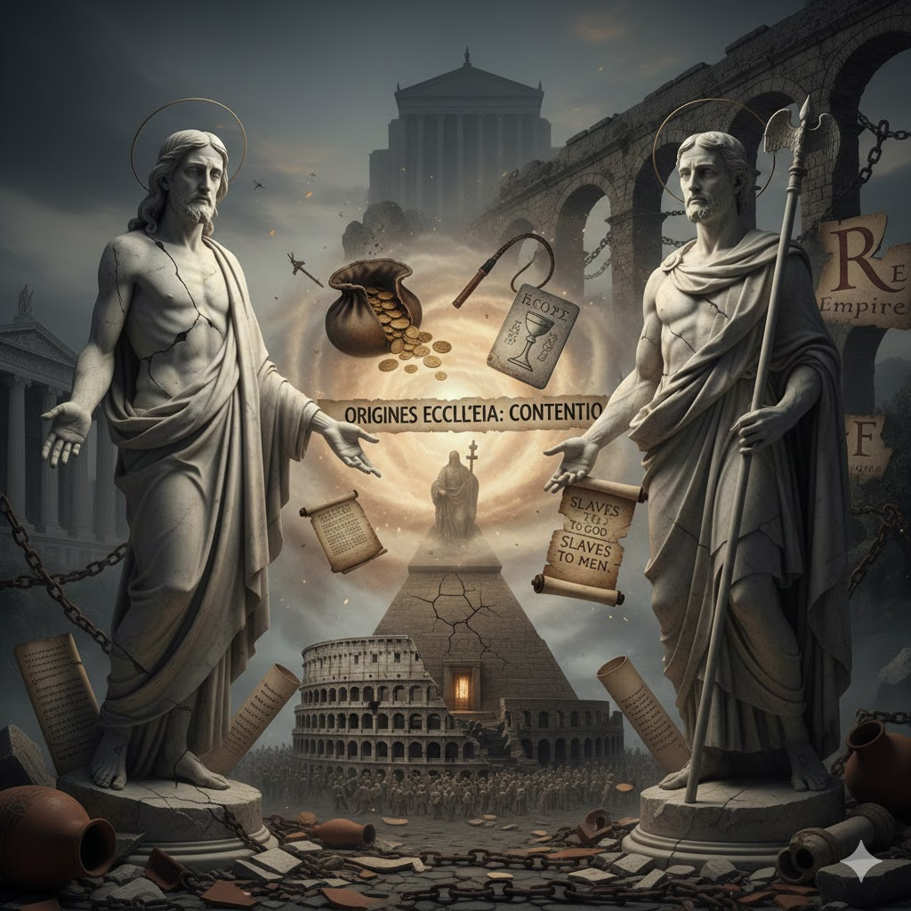

Alternative Origin Story of Christianity and the Catholic Church
I have no idea what is true and what is not, but the following video contains interesting perspectives regarding the origins of Christianity and the Catholic church.
It's long and hard for me to follow the audio, so I used a tool to generate a transcript and google gemini to summarize that.
This article was originally published to:
See also:
There is much more in these videos about contradictions in the Christian Bible and falsehoods in the church than appears in this summary.
Update 4.Dec.2025: Adding:
- What the Ethiopian Bible Says About Jesus Will SHOCK You | Osho: Books the Romans removed from the Christian Bible.
Summary of Points on the Catholic Church and Christianity
-
The Original Mission of Jesus and the Roman Response -Jesus was a poor prophet who taught the existence of a divine spark within people, which could be activated by focusing on his words (poetry/sayings). -This message was one of personal freedom and liberation, reminding people they did not have to be slaves. -This message directly threatened the Roman Empire's economy, which was primarily based on slavery. By encouraging defiance and freedom, Jesus was effectively "stealing" Roman property. -Consequently, the Romans killed Jesus by crucifixion (the punishment for thieves) because he was a threat to their economic and social structure.
-
Paul as the Architect of Christianity and the Church -The Catholic Church was established by the Roman Empire, primarily through the efforts of Paul (Saul), who is considered the true founder of Christianity, not Jesus. -The Church's purpose was to "imprison" the divine spark, hide it from the populace, and transform it into an economic commodity for control. -Paul was a wealthy, Hellenized Jew, and his ability to finance extensive missionary journeys suggests he was likely an agent or spy for the Roman Empire.
-
The Transformation of Theology (Jesus vs. Paul) -Paul used sophistry/rhetoric to perform the "greatest trick ever" by changing the focus from Jesus's words to Jesus's person.
- Jesus's Teachings: Salvation comes from within (the divine spark) and must be sought by the individual. The rich cannot enter heaven because they are too focused on material acquisition.
- Paul's Teachings (The New System): Salvation comes from belief in Jesus (external focus) as redemption from original sin. Converts must show obedience and discipline to the church's word, not think for themselves. The rich are essential as they finance the expansion of the faith.
-
Paul's Synthesis of Three Cultures -Paul constructed Christianity by blending three major cultures of the time: - Jewish Culture: He negated the expected Jewish Messiah of War (who would fight the Romans) by presenting Jesus as the Messiah of Peace, thereby discouraging resistance against the Empire. - Greek Culture: He integrated the story elements (virgin birth, death, resurrection) and rituals of the Dionysus mystery cult as the basis for the Christian narrative and the practice of Eucharist/Communion (ritual consumption to absorb the deity's energy). - Roman Culture: He mirrored the top-down Roman social hierarchy, the pater familias system, to establish the Church's hierarchy (patriarch/bishop at the top, followers/disciples below).
-
The System's Function and Hidden Practices -This new system was the "perfect solution" for Rome by reinterpreting freedom: slaves were converted from being slaves to men to being slaves to God/Jesus. -By promising an eternity of joy in paradise as a reward for decades of work, the new religion caused slaves to be more obedient and to work even harder. -The rapid growth of Christianity is explained by the conversion of Roman patriarchs, who instantly brought their entire pater familias system (family, slaves, clients) with them. -Crucially, the document states that the patriarchs/leaders did not practice the same religion as the slaves. While the slaves practiced Christianity, the patriarchs continued to practice the Greek mystery cults in secret. -These mystery cults became the basis for the secret societies that allowed powerful people to work together, binding them through rituals. This two-tiered religious system is claimed to continue even today. -The alliance that allowed the Catholic Church to dominate was between the Roman patriarchs (the Black Nobility) and the Jews.
-
Persecution and Propaganda -The early Christian movement was initially diverse, included women leaders (like Mary Magdalene), and was democratic, but Paul's Christianity was anti-woman, hierarchical, and promoted strict orthodoxy. -Early Christians were allegedly persecuted by the Romans and by Paul himself as he sought to enforce his singular form of the faith. -Paul, who was a Roman citizen by birth, used this status to evade execution or flogging. This episode in the Bible is cited as pro-Roman and anti-Jewish propaganda, which portrays Jews as irrational murderers of Paul. -The Bible's claim that the Jews killed Jesus is also rejected as propaganda, as the Romans were the ones who carried out crucifixion.
Comments
You can comment here:
Full Transcript
00:00:02 So let's review. Last class we discussed the mission of Jesus. Who is Jesus? Jesus was a messenger from the monad who reminded us that there's a divine spark in us. And how you activate the divine spark is by focusing on Jesus and repeating his words. Jesus was like Zorusta, like Plato, like Homer, like the Yahweh, a poor prophet. And so if you just repeated his sayings, if you repeat his poetry, then you could activate that spark within you and you could glow. Okay? And this explains why it became so
00:00:51 popular. It also explains to us why the Romans had to kill him. Because at this time the Roman empire the main currency the main economy is based on slavery. Most people were slaves. If they're not slaves they were poor. And here is Jesus who's come to remind you that you don't have to be a slave. You are free to do whatever you want. There's a higher power than the Roman Empire and it is the divine. It is the universe. And so people start to defy their masters and they were no longer afraid of death. And this is why
00:01:30 the Romans had to kill Jesus because Jesus was stealing from them. Right? Slaves are property. If you let slaves run away, if you free slaves, that destroys the wealth of the Romans. Remember that Jesus when he was killed, he was killed along with two thieves. He was crucified and so Jesus was killed because he was a thief. He was stealing from the Romans. Now the question then is okay um how do we Jesus to the Catholic Church? Jesus teaches us that we are free to believe whatever we want. That
00:02:13 we just listen to our hearts. We will be in touch with the monad again and we have nothing to fear. The Catholic Church, the church teaches us that you believe in Jesus and that's all you have to do in order to achieve redemption and salvation. Jesus came to die for our sins. So therefore, we are now slaves to Jesus. These are two opposite ideas. Okay. The reason why is the idea of the divine spark is the greatest threat to Roman Empire. So the Romans had to somehow imprison the spark and make it
00:02:48 an economic commodity. Okay? And so that's why they created the Catholic Church. The Catholic Church is a prison in order to control that divine spark to hide it from you. And the main architect of the Catholic Church is his name is Paul. Okay? And most people agree that Paul and not Jesus is the real founder of Christianity. So let's discuss Paul. So Paul has a very interesting background. He is a Jew, but he grew up in Greek culture. He was very well educated. He was very wealthy. And this and so we say he's a helanized
00:03:33 helanized Jew and is probably working for the Roman Empire as a spy or an agent. Now in that time your education was mainly in rhetoric. Okay. The word we use for this is sophistry. So let me explain to you who the sophists were because they're very important. So back in classical Athens there's a major debate between Socrates a philosopher as well as a sophist philosophy. So what's interesting is that they both come from the same word which is sophia which is Greek for knowledge. The philosophers are people who love
00:04:21 knowledge. What they believe is that there's an eternal truth and that we must try to achieve this eternal truth. Right? Remember Plato's allegory of the cave? How you escape from the cave and into the light. Okay? That's what philosophy is trying to do. Trying to help you uh liberate yourself into the light. Sophist believe something else. Sus believe that eternal truth does not exist. Why? Because words are reality. Philosophers believe that words are an illusion. But sisters believe that words
00:04:56 are a reality unto themselves. And so what's important is to learn how to master language in order to construct reality. Okay. So um surface gives us the word surface which is basically trickery. Okay. So in order to defeat the threat of the divine spark, what Paul does is he pulls a trick and it's the greatest trick ever. The trick is this. Jesus says, "Listen to my words and you will find divine spark in you." What Paul says is, "Believe in Jesus and you'll be saved." Okay. So he changes
00:05:38 the focus from the words of Jesus to the person of Jesus himself. All right? And so what Paul's going to do is he's going to construct a new new religion called Christianity by synchronizing synthesizing the three major cultures of that time. The Roman culture, the Greek culture and the Jewish culture. Okay. So remember the Jewish culture is the Bible and what Paul tells us is that Jesus is the promised Messiah. At this time in history uh the Bible is heavily influ influenced by the Persians, right? Remember the Persians
00:06:25 were montheists. They believed in good and evil, the Asher and the Jews. Okay? And so the Bible began to reflect the Persian belief especially in the idea of esquetology the end of the world. And what Jews believed is they're not afraid of the Romans because eventually the Messiah will return or sorry not return the Messiah will come to lead them to war against the Romans and because the Messiah is anointed by God they will triumph. Okay. So the Jews are waiting for the Messiah of war in order for them to reclaim the dev the
00:07:07 Davidic kingdom. Okay, the kingdom of David. What Paul does that's very clever is that he uses this esquetology, but he says that Jesus is not the Messiah of war. He's the Messiah of peace. Okay? And therefore, we Jews should not resist the Romans. Okay. So that's the first major culture that Paul uses. The second major culture that Paul uses is the Greek culture. So um the Greeks have something called the mystery schools. And these are just cults. And it's important you know these mystery schools
00:07:49 because they will become the basis of secret societies today. And in these mystery schools, there's lots of different ones, but Paul chooses a mystery school that worships Dionis. Okay, Dianis is the Greek god of creativity, wine. Um, and the story of Dianius is he is born of a virgin mother. His father is Zeus. And then Dianus is killed by the enemies of Zeus and Zeus finds him and resurrects him. Okay, it's important because this becomes the story of Jesus and the pe how the how that how the
00:08:43 people uh worship Dianis is they have a ritual meal where they actually believe they're eating the body of Dianis and they're absorbing his energy and they're becoming one with Dianis. They're they're coming communion with dynasties and the Christians have the same ritual. Okay. And this is what what's called the eukarist uh thanksgiving or communion. Okay. And all Christians practice this today. Okay. So that's the second major culture. The third major culture that is
00:09:20 the most important of course is the Roman culture. So the Roman social structure is called the patter familias. Okay. And how the system works is at the very top there's one patriarch. This where where we get the word patriarchy, right? And then he has lots of children, right? sons and also has slaves as well. So it's a very topdown system, right? The patriarch patriarch's at the very top. In the system, the patriarch is always right. He is God. Here you have slaves. Now what the patriarch will do
00:10:10 is he will identify very promising slaves, slaves with talent and will turn them into clients. So clients are just business people. So he frees the slaves and they become his clients. So now they're able to conduct business on his behalf and in this way he will create a business empire. Okay. So this is the idea of the Roman Empire. So rather than one system, the Roman Empire is actually a system, a platform where dozens of families control the empire together. And what happens is these families
00:10:48 control a particular province. Okay? So it's more like a franchise model rather than than a strict hierarchy. This is important because Paul will take the system and from the system he will copy it to create the church. All right. So the church is exactly the same as a paraphras where at the very top you have a person a bishop and every and then he might have some um cardinals but then everyone else is just followers okay or disciples. So it mirrors the system. This is important because now what you
00:11:33 can do is you can easily switch from the current system to the new system devised by Paul. Now why would the Romans want to do this? Because if you think about it, this is the perfect solution to the problem of Jesus. As a patriarch, your main concern is getting your slaves to work hard, right? You want to suck the energy out of them. But now with Jesus, slaves are like, "Why? Why should I work for you?" Paul solves this problem by saying, "Oh, follow Jesus and you'll be saved." Okay?
00:12:12 So in this way, what happens is Paul's formulation of Jesus causes slaves to work even harder, right? Because idea is before you have to work in order to stay alive. Now they work in order to go to heaven for all of eternity, right? So the deal now is work as a slave for a few decades, but then you can enjoy an eternity of joy and paradise. Pretty good deal, right? And so this causes the slaves to be more obedient and to work harder. Okay. Also, what's more important is now the patriarch switches from a king to a
00:12:55 god, right? His private wealth now now becomes spiritual authority. Not only that, but because he has spiritual authority, he can expand more rapidly outwards. Okay? So, before to get slaves, you have to buy slaves. Now you you just have to convert people into your religion. So it's a much faster way to create wealth. And this is important because what you learn next class is this is a system that the Romans will use to um take over the barbarians. Okay. So next class you'll learn about the
00:13:36 barbarian invasions basically the Goffs and how because of the system they were now able to assimilate these barbarians into the culture and maintain a social hierarchy. Okay? And so in other words Jesus was talking to slaves but Paul was talking to patriarchs. And so these patriarchs would convert and when they convert they took the entire system with them. That explains the rapid growth of Christianity. Okay. Also what's important is the religion that the patriarchs practice is not the one that the slaves practice.
00:14:19 The slaves practice Christianity but the patriarchs practice the mystery cults. Okay? Why? because this is the way that the patriarchs work together and this becomes a basis for secret societies. So while the ordinary person worships a new religion called Christianity, the patriarchs themselves in secret still practice their Greek mystery cults. This is a system that we still have even today. All right. Okay. So um this system now is able to spread really quickly because as you can see from the system those who
00:15:02 convert are more advantage than those who do not convert. At this time in history most do not convert but those who convert are able to see more rapid wealth generation. They're able to see more power generation and they're able to expand much faster. And so this is a secret of Christianity. Okay? And that's my main argument to you today. Any questions before I go into the specifics? Is this clear to you guys? All right. Let's do the PowerPoint. Okay. Okay. Today we do the rise of the
00:15:44 Catholic Church. Okay. So again, what Paul's going to do is he's going to negate the power of Jesus. He's going to imprison, sorry, he's going to imprison the divine spark in the church. All right? So this is Paul and there's a lot of mythology around Paul, how he's a martyr who went around the world in order to spread Christianity. Okay? We don't know if it's true or not. If you're Catholic, you believe it's true. Um the other thing about Paul that's really important
00:16:15 is that if you read the New Testament, a third is either written by Paul or about Paul. Okay, there's more about Paul and the New Testament than there's about Jesus. That's why that's why we say that Paul is a true founder of Christianity. Christianity is a religion about Jesus, but not by Jesus. It's by Paul. And what's really important for you to appreciate is what Jesus taught and what Paul taught are very different. In fact, they're opposite. Jesus taught that the
00:16:48 divine spark is within you. So if you want to save yourself, if you want to go to the kingdom, you must do so yourself. But Paul says, "No, Jesus came to us in order to redeem us from our sins, the original sin um of disobedience to God way back in the Garden of Eden. If you believe in Jesus, you'll be saved. Doesn't matter what you do, but you you you can do as much good as you want, but if you do not believe in Jesus, you will burn in hell." Okay? That's why you must believe in Jesus.
00:17:23 And that's also why we must get everyone to believe in Jesus because by getting everyone to believe in Jesus, we are literally saving them from eternal damnation. As you can see, this is a really good business uh model because now you can expand really quickly. Okay. Second thing that Jesus taught is he cannot save you. You can only save yourself. He can guide you. We can give you some poetry that you can decipher, but you must seek truth yourself. And what Paul taught is don't think for
00:18:00 yourself, just do what everyone else does. He believed the most important thing is for the church to be cohesive. Okay? For everyone to obey the word of Jesus, which is really the word of Paul. And the third thing is, and this is the most, this is really important. Jesus teaches us the rich cannot enter heaven. Why? Because to enter heaven, you must focus on your own spiritual rejuvenation. But the rich only care about the here and now. They only care about the material acquisition and as such they become blind to the spiritual
00:18:36 needs and so they do not they cannot enter the kingdom of heaven. Remember Jesus tells the story of how the God has prepared a great feast for us, but the rich won't go because they're too busy making money. Paul teaches us, "No, no, no guys, it's the rich which will lead us to the kingdom." Why? Because the rich can finance the spreading of Christianity. What matters is metrics that help us spread Christianity. How many souls are we saving by measuring how many how many people we're converting? Okay, how
00:19:10 cohesive is our church? That's all care Paul cares about. Paul is a business person. Okay, Jesus is a prophet, but Paul is a business person. And so it is Paul really that um is the spiritual god of Christianity, okay? Not Jesus. Another thing that you need to appreciate is at this time in history maybe the year 40 50 there are lots of different Christianities because Jesus taught us that the kingdom of heaven is within you right so it's all very diverse it's all very democratic and
00:19:48 what's really important is a lot of the early leaders are woman okay uh people like Mary Meline um they tend to be wealthy and they tend to be very um charismatic as But by the time you hit Paul Christianity, it's anti-woman. It's a strict hierarchy and it's orthodoxy. Okay? So, in other words, you may you may have heard that early Christians were persecuted. Guess what, guys? They're being persecuted by Paul. Okay? They're being Christian being persecuted by the Romans. They're being persecuted
00:20:24 by Paul. And at this time in history, the Catholic Church, okay, Paul, Paul and Christianity, it's only a very small minority for because for most people um the Christian of Jesus is much more appealing than the Christianity of Paul. Jesus taught freedom, empowerment, liberation. Paul taught obedience, discipline, sacrifice. Okay? So Jesus is far more appealing. But because Paul is being supported by the Roman Empire, he wins. Okay. What Paul will do is not only persecute other Christianities, but he
00:21:00 will quickly spread his Christianity with the help of the Roman Empire. All right. So, as you can see, what's going to happen is in the year 30 when when Jesus dies, it's a very small group of people, but it spreads really quickly. Okay. and um built the foundations for this great empire that in about the year 300 reaches its peak. Okay. In about the year 300, what will happen is Christianity becomes the official religion of the Roman Empire. And this is the beginning of the Catholic Church. But it's Paul that
00:21:36 built the foundation for this growth. Okay. Um so as you can see um Jesus he's spreading his poetry and it's because his poetry is easy to memorize this his poetry spreading really quickly throughout the empire. Okay. But uh what will happen is that once Paul builds the structure of Christianity, the church system based on the pattern pattern system of the Romans, it will spread even quicker and eventually these two Christianities will come into conflict and eventually Paul's system will win
00:22:15 out until it conquers the entire Roman Empire. Okay. All right. So um scholars agree that Paul is the founder of Christianity. But there are three mysteries to Paul that scholars can't really answer. Okay. The first question is why would someone like Paul who is a literate and wealthy Jew, why would he join a movement of illiterate Jewish peasants? Okay. No. No. The scholars don't really have an answer for this. Second question is we know that Paul was a fanatical Pharisee. Okay, he he was
00:23:01 hunting Christians but then he converts to become a fanatical follow of Jesus. Why would he do that? Okay. The third mystery is this the most important is he spends his entire life promoting Christianity around the Roman Empire. Where did he get the money to do this? Because not only did he go, but he he also had secretaries who went with him to take notes. Where's where does the money come from? Okay, so if you just do some basic game fair analysis, he's clearly a spy. Okay, clearly a spy. He's
00:23:34 an agent of of a power. The question for us though is who is he working for? The easy answer seems to be the Roman Empire. But in fact, you could also make the argument he's working for the Jewish leaders. Okay, the Jewish priests as well. Okay, so we we'll go over this. All right, so what we're going to do is we're going to read the Bible now. Okay. Now, one thing about the Bible that um is very confusing is the Bible says that the Jews killed Jesus. And as we discussed last class, the Jews would not
00:24:12 kill Jesus for a variety of reasons. Okay. Um, but the main reason is Jews don't kill each other. Well, I'm sorry. Jews do not turn each other over to the Roman authorities. If you commit blasphemy, if you insult their god, they kill you by stoning you. Okay? They don't have a habit of turning people over to the Roman authorities. So, we know the Romans killed him. And it's most likely the Romans killed him because Jesus Jesus was a threat to their social structure. But the Bible
00:24:41 says that nope, it was the Jews who killed um Jesus. So Emmer, could you read please? Okay, so this is from John the Gospel of John. Then Pott took Jesus. Palad Pontius Pilot is a Roman governor who who orders Jesus' execution. Okay. Pilot. Yeah. Pontius Pilate. Then Pilate took Jesus and had him flocked. And the soldiers wo a crown of thorns and put it on his head. And they dressed him in a purple robe. They kept coming up to him saying, "Hail, king of
00:25:15 the Jews." And striking him on the face. Pilot went out again and said to them, "Look, I am bringing him out to you to let you know that I can find no case against him." Okay, so what's happening is Jesus is arrested by the Jewish priest and they accuse him of blasphemy, of pretending to be God. And they bring him to Pontious Pilot, the governor, and says, "You must execute this man because he has insulted our religion." And so Pontius Pilate interrogates Jesus and he
00:25:44 doesn't really think he did anything wrong. Okay? But to to appease the priest, he beats he whips Jesus. And now he's like, "You know what? I whipped this guy. I punish him. Now, could you please go away?" Okay? Keep on going. Pilate went out again and said to them, "Look, I am bringing him out to you to let you know that I can final case against him." So Jesus came out wearing the crown of thorns and the purple robe. Plet said to them, "Here is the man."
00:26:10 When the chief priests and the police saw him, they shouted, "Crucify him! Crucify him!" Pilot said to them, "Take him yourselves and crucify him. I find no case against him." The Jews answered him, "We have a law, and according to the law, he ought to die because he had claimed to be the son of uh son of God." Okay, so do you understand what's going on? Okay, the Bible claims that Jews killed Jesus. All right. So, um, this teach this shows us that the Bible is not that reliable. All
00:26:40 right. Okay. So, let's go into the story of Paul. Um, Allan C, can you please Okay. So, so, so let let me show give you the context. Okay. This is from the acts of the apostles and it's mainly about Paul and how he became a follower of Jesus. And at this time, Paul is persecuting Christians. We don't know why he's persecuting Christians. We don't know what why the Jews hate the Christians, but uh Paul is going around persecuting the Christians as a Pharisee. And then on the way to
00:27:12 persecuting more Christians on the road to Damascus, he a light seizes him and it's Jesus telling him, "Paul, why are you persecuting me and my followers?" And then that converts Paul. It makes no sense as a story. Okay, but this is what Christians believe. Okay, can can you read Alan? Meanwhile, Saul, still breathing threats and murder against the disciples of the Lord, went to the high priest and asked him for letters to the synagogue synagogue synagogues. The the synagogue is a place of worship
00:27:44 for diaspora Jews because Jews worship the the temple, right? But the temple's in Jerusalem. So if there if you're outside Jerusalem, then you go to synagogue, okay? Which basically a Jewish church synagogues and Damascus. so that if he found any who belonged to the way, men or women, he might bring them bound to Jerusalem. Now, as he was going along and approaching Damascus, suddenly a light from heaven flashed around him. He fell to the ground and heard a voice saying to him, "So, so why do you
00:28:16 persecute me?" He asked, "Who are you, Lord?" The reply came, "I am Jesus, whom you are persecuting. But get up and enter the city, and you will be told what you are to do." The men who were traveling with him stood speechless because they heard the voice but saw no one. Saul got up from the ground and though his eyes were open, he could see nothing. So they led him by the hand and brought him into Damascus. For three days he was without sight and neither ate nor drink.
00:28:47 Okay, so this is a miracle, right? This guy hated Christians and now because he was blinded, he loves Christians. What what you will notice is um this is very similar to Plato's allegory of the cave because remember uh Paul's trained in Greek culture. So he knows about Plato and this is model of the allegory of the cave where you're in darkness and suddenly you go out and you're blinded by the light and then you see the truth. Okay. Another thing that's important is
00:29:16 that clearly Jesus favors Paul. What's interesting is that if you read Paul's letters, and we all read his letters, if you read Paul's story, he doesn't really talk about Jesus that much. He doesn't even quote Jesus. Okay? So, that's kind of weird. If you know, you're a father of Jesus, but you really don't quote Jesus. And Jesus has a lot of quotations. He really don't talk about Jesus that much. And he doesn't really refer to the story that much in um uh in in his letters. The other thing
00:29:49 that that I will note is that if you read Jesus, okay, Jesus doesn't really talk about good and evil, doesn't really talk about the Bible, um doesn't really talk himself as a son of God, but Paul will talk about this a lot. Okay? All right. So again, Paul's amazing because he'll go on three different voyages, miss missionary journeys around the Roman Empire in order to spread the gospel of Jesus. This is very, very hard work. It's also expensive work, okay? Because you can see how he's going from
00:30:26 different cities, he's going to synagogues, and he's preaching the gospel. Okay? Um what's what's important to us to understand is that as Paul is doing this he's winning a lot of converts because he's but he's come in contact with James the just remember James the just is the brother of Jesus who inherits the movement. James the just is in Jerusalem and Paul is going around and spreading the gospel of Jesus. And so James James the just hears about this and people are
00:31:00 saying to him Paul's saying Jesus is God. Is Jesus God? And James does is like, of course, he's not God. He's my brother, man. And so there so there's all this conflict and eventually what will happen is it forces Paul to confront James and just in Jerusalem. According to the Bible, the main conflict is one of ideology. Okay? So the Bible says that James the Jud and Paul both agree that Jesus is God, the son of God who's come to our planet to redeem us. But James the Just believes what's important is to
00:31:36 maintain the faith within the Jewish tradition. Whereas Paul wants to expand this tradition outside the Jewish tradition to encompass the Greeks as well and the Romans as well. Okay, the G the Gentiles. And that's where the conflict arises. And so the main point of conflict is one of circumcision because remember Jews circumcise themselves but the Greeks and Romans do not circumcise themselves. Uh this is important because in this time most of these cities are Greek cities. Greek cities have a place called gymnasium
00:32:04 where men go to play sports but you play sports naked. So if you're a Jewish man they know automatically you're Jewish. So superstition is a huge point of division between the Gentiles and the Jews. And Paul's point is that if you want to convert, you don't have to circumcise. And so the Jews are complaining to James says, "Hey, Paul is subverting our tradition. He's saying that Jewish men uh he's saying that Greek men can come and and follow religion religion without
00:32:34 being without being circumcised." Okay? And so there's a lot of conflict between James the just and Paul. So Paul actually goes to Jerusalem and he confronts um uh James the judge and they and they have they come to an agreement with each other. Okay. So um but when Paul goes to Jerusalem people recognize him and so the Amal wants to kill him. Okay. Can you read Amber? Up to this point they listened to him, but then they shouted, "Away with such a fellow from the earth, for he shall not be
00:33:09 allowed to live." And while they were shouting, throwing off their cloaks, and tossing dust into the air, the tribune directed that he was to be brought into the barracks and ordered him to be examined by flogging to find out the reason for this outcry against him. But when they had tied him up with with songs, sorry, Paul said to the centurion who was standing by, "Is it illegal? Is it legal for you to fogg a Roman citizen who is unconddemned?" When the centriion heard that, he went to the tribune and
00:33:40 said to him, "What are you about to do? This man is a Roman citizen." The tribune came to ask Paul, "Tell me, are you a Roman citizen?" And he said, "Yes." The tribune answered, "It cost me a large sum of money to get my citizenship." Paul said, "But I was born a citizen." Immediately those who were about to examine him drew back from him. And the tribune also was afraid, for he realized that Paul was Roman citizen and that he had bound him. Okay, so certain things to notice about
00:34:04 about this writing. First of all, you can see it's very anti-Jewish. The Jews just want to kill Paul for no particular reason. Okay, Paul speaking the truth and the Jews want to kill him. Okay, it's a Jewish mob. That's first thing. Second thing is that it's very pro-woman, right? It's the Roman soldier come and save Paul from the mob. And this story is very similar in fact the story of Jesus. So Jesus was um arrested and the mob wants to kill him, right? And the Romans want to save Jesus but
00:34:35 they can't they cannot stop the mob. But Paul, it's the same situation with Paul. But what saves Paul is this. He is a Roman citizen. Okay? So that's what saves him. Rome saves Paul. God can't save Jesus but Rome saves saves Paul. Okay. So this is propaganda and this propaganda written of course for hen Jews like Paul who are waving between uh loyalty to Rome or loyalty to uh the Jewish tradition. And what Paul says is the solution is to become a Christian because now you can become
00:35:13 become both. You can now become like me loyal to the Jewish tradition but also loyal to Rome. Okay. All right. Alan, can you read please? When we came into Roman, Paul was allowed Okay. Sorry. Sorry. Sorry. Um I I I I need to set this up. Okay. So the Romans say to Paul, um why do the Jews want to kill you? And Paul says because they think think I'm insulting their religion. And Paul says, I'm a Roman citizen. So I want an audience with the emperor. Only emperor can decide my
00:35:47 fate. So the Romans sent him with an with a soldier escort back to Rome. Okay. And this is how the acts of the apostles end. Okay. Can you read um when we came into Rome, Paul was allowed to live by himself with the soldiers who was guarding him. Three day later he called together the local leaders of the Jews. When they had assembled, he said to them, "Brothers, though I had done nothing against our people or the customs of our ancestors, yet I was arrested in Jerusalem and handled over
00:36:19 to the Romans." When they had exempt me, the Romans wanted to release me because there were no reasons for the death penalty in my case. But when the Jews objected, I was compelled to appeal to the emperor even though I had no charge to bring against my nation. Okay, this is really interesting. Okay, this is a change in the story. Before Paul said that he wants to return to Rome in order to face judgment from the emperor. And what Paul's saying now is you Jews attacked me and if I wanted to, I could
00:36:54 complain to the emperor and bring charges against you Jews. Okay, so he's showing you the story. He's showing how powerful he is. Okay, keep on going. For this reason, therefore, I had asked to see you and speak with you since it is for the sake of the hope of Israel that I am bound with this chain. Okay? So, he's saying, listen, those guys in Jerusalem harass me and so I've come back to Rome and I I want to speak to you Jewish leaders and let's see let's see if if we can work together
00:37:26 because you piss me off in Rome, I can unleash the empire on you. Okay? So he's now threatening these Jewish elders. Come on, go. They replied, we have received no letter from Judah from about you and none of the brothers coming here has reported or spoken anything evil about you, but we would like to hear from you what you think. For with regard to this sect, we know that everywhere it is spoken against. Okay. So what they're saying is it's all misunderstanding, Paul. Okay. We don't
00:37:56 know what's going on. Why don't you tell us what's going on? Keep on going. After they had set a date to meet with him, they came to him at his longings in great numbers. Okay, so basically all the Jewish leaders have to come because they they understand that Paul represents the empire. Okay, keep on going. From morning until evening, he explained the matter to them testifying to the kingdom of God and trying to convince them about Jesus both for from the law
00:38:24 of Moses and from the prophets. So again what Paul's saying is that Jesus is the fulfillment of the Bible. He's fulfillment of prophecy. He is the Messiah. Keep on going. Some were convinced by what he had just what he had said while other refuse to believe. Okay. So now some of these Jewish leaders are being converted by Paul. They are now moving towards the Christian faith. That's how powerful Paul is. Okay. Keep on going. So they disagree with each other and as
00:38:51 they were leaving Paul made one further statement. The Holy Spirit was right in saying to your ancestor through the prophet Isaiah Isaiah, "Go to this people and say, you will indeed listen but never understand and you will indeed look but never perceive. For this people heart has grown dor and their ears are hard of hearing. and they have shut their eyes and they might not look with their eyes and listen with their ears and understand with their heart and turn and I would hear them. Let it be known to
00:39:28 you then that is salvation of God have been sent to the Gentiles they will listen. Okay, so he's saying so he's convincing some Jewish leaders to convert, right? But not all convert. And so Paul gets pissed off and says you Jews are so stubborn. You don't get it, man. Okay, but don't worry if you don't get it. The Gentiles, the Greeks and Romans will get it. We will win eventually. Okay, keep on going. And live there two whole years at his own expense and welcome all who
00:39:59 come came to him proclaiming the kingdom of God and teaching about the Lord Jesus Christ with all boldness and without hires. Okay. So, something I will point out is this. It looks like Paul is an agent of Rome. Okay, it looks like he repres represents the empire. But why would he write in such a way as to be so blatant? And so you can also argue that Paul could be a double agent. Okay, he pretends to be the an agent, a spy for Rome, but he's actually working for the Jewish leadership. Why would why
00:40:34 would the Jewish leader support Paul? Because by spreading Christianity, he's spreading the Bible and he and the Bible says that Jews are God's chosen people. So he's elevating the status of Jews in Rome. Okay? So it's not as simple as it looks. From this, if you just read it, it seems like Paul is a spy for Rome. But you think much more deeply about what he's doing. Why would he be so blatant and tell people, "Ha, I represent the empire." Well, maybe because he's being a real Maybe because
00:41:06 he's he's being a double agent, right? The thing that you have to remember about spies is they have no loyalties. They are double agents are triple agents. Okay? They're always switching loy loyalties back and forth. Okay. So now what what I want to do is I want to go into the actual thinking and writing of Paul. This is Romans which is one of his major letters. And in these letters, what he's going to do is he's going to articulate to you this new philosophy of Christianity. Okay? These
00:41:40 these letters become the basis for the Catholic Church. Okay? So, can you read Amber, please? Circumcision indeed is a value is a value if you obey the law. But if you break the law, your circumcision has become uncircumcision. So if those who are uncircumcised keep the requirements of the law, will not their uncircumcision be regarded as circumcision? Okay, so stop. So this is Paul and what you can see is he's a master of rhetoric. Okay, the Jews are very clear. If you are Jewish, you must be
00:42:13 circumcised because circumcision is a is the sign of a covenant between our people and God. If you're not circumcised, you're not Jewish. And what Paul says, no, what matters is your heart. What matters is your spirit. If you have faith in God, that's what matters. Okay, keep on going. Then those who are physically uncircumcised but keep the law will condemn you that that have the written code and circumcision but break the law. For a person is not a Jew who is one outwardly, nor is true circumcision is
00:42:44 something external and physical. Rather a person is a Jew who is one inwardly and real circumcision is a matter of the heart. It is spiritual and not literal. Such a person receives praise not from others but from God. Then what advantage has Jews? Okay. So do you guys understand this is rhetoric right? This is sophistry where he's changing the definition of the word where changing the idea of the word. Circumcision is a covenant between the Jews and God. What Paul says, what matters is not the
00:43:16 physical act. What matters is the faith in God. Okay? That's a covenant. All right? And as such, you do not have to be uh um circumcised. Okay? Uh c can you read, Alan? But now, apart from law, the righteousness of God had been disclosed and is attested by the law and the prophets. the righteousness of God through faith in Jesus Christ for all who believe. For there is no distinction. Since all have sins and fall short of the glory of God, they are now justified by his grace as a gift.
00:43:54 Though the redemption that is in Christ Jesus whom God put for forward as a sacrifice of atonement by his blood effective through faith. He did this to show his righteousness because in his divine forbear forbearance he had passed over the sins previously committed. It was to prove at the present time that he himself is righteous and that that he justifies the one who has faith in Jesus. Okay. So, Jews believe what's important is to follow the laws, okay? To be circumcised, to um rest on the Sabbath,
00:44:30 to only marry within the tribe. And what Paul says is what's important is your belief in Jesus, your belief that Jesus came in order to redeem us from our sins, the original sin. Okay? That's what matters now. Before it was these laws. Before it was these actions. And now what matters is what you truly believe. Okay? It is only believe in Jesus that can save you. You can do as many good works as you want. You can follow as many laws as you want. Does not matter. The key is faith in Jesus.
00:45:05 Okay. All right. Okay. Can can you read? Yes. And so, brothers and sisters, I could not speak to you as spiritual people, but rather as people of the flesh, as infants in Christ. I fed you with milk, not solid food, for you were not ready for solid food. Even now, you are still not ready, for you are still of the flesh. For as long as there is jealousy and quarreling among you, you are you not of the flesh and behaving in courtly according to human inclinations. For when one says I belong to Paul and
00:45:41 another I belong to Apollos, are you not merely human? Okay. So what Paul is doing is he's going around and corrupting the teachings of Jesus. And other people are calling calling around and says Paul this is not what Jesus taught. Okay? And so what Paul's saying is guys guys we shouldn't argue. Okay? Because who's right? Jesus is right. Okay? It's not what you say. It's not what I say. It's what Jesus says. So this again is sustry. It's rhetoric. He's positioning
00:46:06 himself above the debate rather than engaging debate directly and saying like what did I Jesus actually teach and what are the true teachings? Paul's saying what's important is to obey Jesus. Okay. What's important is obedience not debate. Keep on going. What then is Apollos? What is Paul? Servants through whom you came to believe as the Lord assigned to each. I planted Apollos watered but God gave the growth. So neither the one who plants nor the one who waters is anything, but
00:46:37 only God who gives the growth. The one who plants and the one who waters have a common purpose. And each will receive wage according to the labor of each. For we are God's servants working together. You are God's field, God's building. Okay? So Paul is evil. Okay? Everyone's saying to Paul, "Paul, you're corrupting the teachings of Jesus." is and Paul's saying no what matters is we spread the message of Jesus and everyone's saying but what's the message of Jesus Paul
00:47:05 SAYING IT DOESN'T MATTER WHAT MATTERS IS THE GROWTH of Jesus okay this is sustry keep on going according to the grace of God given to me like a skilled master builder I laid a foundation and someone else is building on it each builder must choose with care how to build on it for no one can lay any foundation other than the one that has been laid that foundation is Jesus Now if anyone builds on the foundation with gold, silver, precious stones, wood, hay, straw, the work of each builder will become visible. For the day
00:47:36 will disclose it because it will be revealed with fire and the fire will test what sort of work it has done. If what has been built onto the foundation survives, the builder will receive a reward. If the work is burned up, the builder will suffer uh suffer loss. The builder would be saved, but only as through fire. Okay, so what Paul's saying is this. We're all going to work together to spread the message of Jesus. You may believe Jesus says one thing, I believe another thing, but let's not argue,
00:48:04 okay? Let's just keep on spreading the word of Jesus and we'll see which person has the biggest church and we'll know who's right. Okay? So, he's using the metric of business success, of wealth, of material acquisition to justify his faith in Jesus. Okay? And this is the opposite of what Jesus taught. And people are saying, Paul, this is not what Jesus taught us. Paul's like, "No, no, no. We're going to see who wins out in the end." Okay, keep on going. Do not know that you are God's temple
00:48:32 and that God's spirit dwells in you. If anyone destroys God's temple, God will destroy that person. For God's temple is holy and you are the temple. Do not deceive yourself. If you think that you are wise in this age, you should become fools so that you may become wise. For the wisdom of this world is foolishness with God. For it is written, he catches the wise in their craftiness. And again, the Lord knows the thoughts of the wise that they are feudal. So let no one boast about human leaders. For all
00:49:06 things are yours, whether Paul or Apollos or Cphas or the world of life or death or the present or the future, all belong to you and you belong to Christ and Christ belongs to God. Okay? So he's very clever, right? He's saying yes. Jesus taught us that God's spirit dwells in you. What this means isn't that you have free will. What it means is you don't have free will because you must do the work of God which is to spread the message of God which is to extend the power of God in
00:49:37 this world. Okay. So you see how this is sustry right? He's tricking people. He's deceiving people. Jesus taught you the light is within you and therefore you are you know God. You just trust yourself and that's good. And then what Paul says, no, you are a tool of God. Okay. Uh, keep on going. Think of us in this way as servants of Christ and stewards of God's mysteries. Moreover, it is required of stewards that they be found trustworthy. But with me, it is a very small thing that I
00:50:06 should be judged by you or by any human court. I do not even judge myself. Okay. Okay. All right. So, let's keep on going. Uh, Alan, can you read, please? When you're a slave when caught, do not be concerned about it. Even if you can gain your freedom, make use of your present condition now more than ever. For whoever was caught in the Lord as a slave is a freed person belonging to the Lord. Just as whoever was freed when caught as a slave of Christ, you were bought with a price. Do not become slave
00:50:39 of human masters. In whatever condition you were called, brothers and sisters, there remain with God. Okay, so Paul's being very clever again, okay? Because this message is appealing to slaves. Jesus taught these slaves, you're free. And these slaves say to Paul, "We're free, right?" And Paul says, "You are free, but you are a slave to God." Do you understand? Okay. Therefore, no human can be a master of you because you're all slaves to God. He's confusing people. Okay. Uh can you
00:51:09 keep on reading? For though I am free with respect to all, I have made myself a slave to all so that I might wing more of them. To the Jews, I become as a Jew in order to wing Jews. To those under the law, I become as one under the law. Uh under the law, though I myself am not under the law, so that I might win those under the law. To those outside the law, I became at one outside the law. Though I am not free from God's law, but I'm under Christ's law, so that I might wing those outside the law. To the weak, I
00:51:46 become weak, so that I might wing the weak. I'm become all things to all people, that I might by all means save some. I do it all for the sake of the gospel, so that I may share in its blessing. Do not know that in a race the runners all compete, but only one receives the prize. run in such a way that you may wing it. Athletes exercise self-control in all things. They do not they do it to receive a parish perishable wealth, but we and we and imperishable one. So I do not run aimlessly, nor do I box as though
00:52:26 beating the air, but I punish my body and enslave it, so that after proclaiming to others, I myself should not be disqualified. Okay. So, it's almost like a pep rally, right? He's a business person. He's telling his workers, "Go out and sell those damn hamburgers, man. I don't care what you do. I don't care how many lies you tell. Go sell those hamburgers. Pretend they're healthy. Okay? Pretend you love hamburgers. Just pretend. What matters is you go sell those hamburgers.
00:52:58 And guess what, man? Whoever sells those hamburgers gets a car." Okay? But this is better than car because this is the the reward is heaven, eternal paradise, guys. SO GO AND SELL THOSE HAMBURGERS. All right. All right. Um can can you read can you read the highlighted part, Amber? Uh now in the following instructions, I do not commend you because when you come together, it is not for the better but for the worse. For to begin with, when you come together as a church, I hear that there are divisions among you, and
00:53:36 to some extent, I believe it. Indeed, there have to be faction among you, for only so will it become clear who among you are genuine. When you when you come together, it is not really to eat the Lord's supper. For when the time comes comes to eat, each of you goes ahead with your your own supper, and one goes hungry and another become drunk. What do you not have a homes to eat and drink in? Or do you show contempt for the church of God and humiliate those who have nothing? What should I say to you?
00:54:10 Should I commend you in this matter? I do not commend you. Okay. So, what he's saying is this. When you come to when you come to a church, it's very important that you obey the ritual. Okay? The ritual is communion, the Eucharist. And you we must remember this is a ritual where you must follow the exact protocols. If you do not then there's no point in coming to church. So the church is not a place to discuss Jesus, not to debate Jesus, but to worship Jesus. Okay, keep on going.
00:54:40 For I receive received from the Lord what I also handed on to you. And the Lord Jesus on the night when he was betrayed took a loaf of bread and when he had given thanks, he broke it and said, "This is my body that is for for you. Do this in remembrance of me." In the same way, he took the cup also after supper, saying, "This cup is the new covenant in my blood. Do this as often as you drink it in remembrance of me. For as often as you eat this bread and drink this cup, you proclaim the Lord's
00:55:13 death until he comes. Whoever therefore eats the bread of drink uh uh eat the bread or drink the cup of the Lord in an unworthy manner will be answerable for the body and blood of the Lord. Examine yourselves and only then eat the bread and drink from of the cup. For all who eat and drink with discerning uh without discerning the body eat and drink judgment against themselves. For this reason, may a few are weak and ill, and some have died. But if we judge ourselves, we would not be judged. But
00:55:46 when we are judged by the Lord, we are disciplined so that we may not be condemned along with the world. So then, my brother and sisters, when you come together to eat, wait for one another. If you are hungry, eat at home so that when you come together, it will not be for your condemnation. about uh about the other things I will give instruction when when I come. Okay. So this is a really important ritual. It's the most important ritual in Christianity called the Eucharist thanksgiving. Okay. And in this it's
00:56:15 basically they eat some bread and they drink some wine and they believe it is the flesh and blood of Jesus. So Jesus is entering them. Okay. And as you can imagine what they're doing really is negating divine spark in you. Divine spark is free. It's individual. It's independent. When you part partake in the body of Jesus, you become one with everyone else. Okay? That negates your individuality that it negates a spark within you and you become just the church itself. Okay? And that's the idea
00:56:48 of the Eucharist to destroy your individuality. All right? And so when Christians do this, they literally believe the bread they're eating is the body of Christ, of Jesus. So Jesus is entering into you and taking you over. Okay? Okay. It's possession by Jesus. Uh yes. Can we see this as a way that they abuse or exploit Jesus because they are just eating their body although the body of Jesus is hollow? Uh no. No. The idea here is that Jesus is your master. Okay. And when you
00:57:22 partake in Jesus, you become a part of Jesus and therefore you must obey exactly what he wants. Okay? All right. So this is confusing because it's cannibalism. Okay. But um as I told you before, this is actually a very common thing among the Greek mystery cults where they come together and they believe that when they eat food, they're actually eating the body of Dianesis and Dionis his energy is is being consumed into you. Okay. What's important for us to appreciate is like these mystery cults are demonic.
00:58:01 Okay. So, what else they do is they will have ritual sacrifices where they will tear people apart and consume the flesh. Okay. So, this is from a painting from the Ubides play describing one of these mystery codes. Um, okay. So, they will actually tear a person's body apart to replicate the death of Dianis and they consume the body part. All right. And guess what guys, the secret society still do the slay. Okay. So but but what's important to understand is this actually has a long tradition. So if you go back to 15,000
00:58:35 years to Europe in the m Magdalinian age um cannibalism was actually very common. It was common for religious purposes. So maybe there was someone that you loved and he died. What you would do is you consume his body when he died in order to remember him forever. Okay? so that you would have an eternal communion with him because his soul would go into the spirit world. But if you had his body, right, he would always communicate with you. And that's the idea of commemorating Jesus like in such a way
00:59:07 when you consume Jesus, Jesus is always with you. He is now taking possession over your body. You are now just a body for Jesus. Okay? Does that make sense? You've lost your individuality. You've lost your freedom. You are now completely possessed by Jesus. when you um are when you engage in the Eucharist. Okay. Yes. So the so during that time nobody founds that like this is disobeying the the original the original belief of Jesus like Paul is just using of peoples to obey. Yeah, that's a really good question.
00:59:44 Okay, most people at this time think Paul is just evil. Okay, it's like this is not what Jesus taught us. Jesus taught us to believe in ourselves. Jesus would never teach us this demonic thing of sacrifice. Okay? Jesus came to teach us that animal sacrifice, human sacrifice, it's all evil. Okay? He got rid of that. But again, so at this time in history, Paul's church, Paul's followers are only limited amount. Okay? Very few people. But he doesn't care because he's building the
01:00:15 found the blueprint for an empire. Does that make sense? Okay. So when the Romans force this religion on everyone now everyone has to obey this you understand if you actually from first principles try to convince people the Catholic church is right you can't really convince that many people but guess what guys doesn't matter because most most people are born into the Catholic church so they are born believing this stuff okay so so they can't really think for themselves all right but also remember cannibalism
01:00:45 is very common throughout history so these are the Aztecs who will engage in cannonism in order to uh prepare for war in order to sacrifice um others for for for the gods. Okay. Uh again, this is the Magnolian culture and we found um lots of places where they engage in cannibalism during funerals. Okay? And as you can see, it's very common. It's very common throughout the world at this time. And it makes sense if you think about it, right? If this person is someone you love and he was very special
01:01:19 to you and you want him to still help you in life to guide you in life and you consume his body, a part of his body, then he'll stay with you forever. Okay? And this is a way to build group cohesion in this time. Remember this is the ice age. So it's very hard to survive and um but of course not everyone practices this as well. Okay. Uh the red are those who practice cannibalism during funerals. The blue are just those who just bury the body and and don't practice cannibalism. Um so what you're not taught is among the
01:01:58 elite this sort of stuff goes on a lot. So this is 19th century in Victorian Britain and this is you know the the British Empire. And guess what guys? What they like to do is they like to uh steal mummies from Egypt and eat these mummies because they believe that these mummies had some magic qualities. Okay, so this goes back to the 19th century. And you think to yourself, oh, you know what? In the 12th century, we are so much more advanced. We don't do this crap anymore. Right? Unfortunately,
01:02:32 this is Albert Einstein's brain. Albert Einstein before he died said, "Please, please, whatever you do, do not dissect my brain." Okay, I know I know you think I'm I'm the greatest genius in the world and you want to know how my brain works, but I'm telling you right now, my brain is so different from your brain. Please, whatever you do, do not dissect my brain. So, of course, a doctor steals his brain and cuts it into different pieces. Okay? Now, let me ask you this question. Let's
01:02:58 just say this doctor were to take his brain and makes a medicine out of it. Okay? He takes his brain, cuts up into like 100 different parts. And then he takes this medicine and he sells it to rich people for a million dollars. Could he find 100 rich people who would pay a million dollars to eat ice brain? Yes. Okay. So, as I'm telling you, the rich are insane. All right. My my wife tells me that when I die, it's possible they might want to dissect my brain as well. So, um please don't do so, okay? Because my brain's no
01:03:32 different from anyone else's brain. Okay. You won't find the secret of my creativity with my brain. All right. All right. So, um, Yep. Alan, can you read, please? Yeah. Indeed, the body does not consist of one member, but of many. If the foot would say because I am not a band, I do not belong to the body, that would not make it any less a part of the body. And if the air would say because I'm not an eye, I do not belong to the body, that would not make it any less a part of the
01:04:10 body. If the whole body were an eye, where would the hearing be? If the whole body were hearing, where would the sense of smell be? But as it it is God arranging the member of the body, each one of them as he choose, if all were a single members, where would the body be? As it is, there are many members yet one body. The eye cannot say to the hand, I have no need of you. Nor against the hat to the fa feet, I have no need of you. On the contrary, the members of the body that seems to be weaker are
01:04:50 indispensable. And those members of the body that we think less uh let me see honorable we close with greater order. And our less respectable members are treated with greater respects. Whereas our more respectable members do not need this. But God has so arranged the body giving the greater honor to the inferior member that there that the there may be no dension dissension within the body. But the members may have the same care for one another. If one member suffers, all suffers together with it. If one member
01:05:36 is honored, all rejoice together with it. Okay? So what he's saying is this. Okay? When you consume the body of Christ, you've all consume a part of him, right? And so we we need to come together as a people, as a church to form the whole body of Jesus. And that means that you must do what others tell you to do. Okay? This requires complete obedience if we are to resurrect Jesus in our church. Does that make sense guys? Okay, keep on going. Now you are the body of Christ and
01:06:06 individually member of it and God has appointed in the church first a postlets second prophets. Third teachers, then deeds of power, then gifts of healing, form of assistance, form of leadership, various kind of tongues. Are all all are allost apostles? Are all prophets? Are all teachers? Do all work miracles? Do all possess gifts of healing? Do all speak in tongues? Do all inter interpret? But strive for the greater gift as I will show you a still more excellent way. Okay. So, do you understand what's going
01:06:47 on? Okay. No matter who you are, no what you do, what's important is your sacrifice to Jesus to obey him completely. Okay. So, this is all ordained by Jesus. All right. Uh Emer, can you read the yellow, please? Love is patient. Love is kind. Love is not envious or boastful or arrogant or rude. It does not insist of on its own way. It is not irritable, irritable and resentful. It does not rejoice in wrongdoing, but rejoice in the truth. It bears all things, believes
01:07:18 all things, hopes all things, endearest all things. Love never ends. But as for prophecies, they will come to an end. As for tongues, they will cease. As for knowledge, it will come to an end. For we all know only in part, and we prophecy only in part. But when the complete comes, the partial will come to an end. When I was a child, I spoke like a child. I thought like a child. I reasoned like a child. When I became an adult, I put an end to childish ways. For now, we see in a mirror dimly, but
01:07:49 then we will cease face to face. Now I know only in part. Then I will know fully even as I have been fully known. And now faith, hope, and love abide, these three. And the greatest of these is love. Okay. So you understand Paul does susty. So you think the word is love. Great love. We love Jesus. The word actually means obedience, right? If you join the church, what is required for you is complete obedience to Jesus. Do you understand that you and I are slave to Jesus? Remember when we commit the original sin, when we
01:08:22 did evil, we became slaves to the devil. When Jesus killed us, it's because he sorry when Jesus died, it was to ransom us from the devil. So now we are slaves to Jesus and therefore we must obey him completely. Okay? No argument, no opinion, no individual individuality, just complete obedience to Jesus. So you can see the power of this, right? He he switches these words. He's saying that slavery is now love. Okay? When a human master enslaves you, that's evil. But when Jesus enslaves
01:08:57 you, it's good because now it's love. It's because Jesus loves you. That's why he enslaves you. But now, because he loves you, you must obey him completely. And that means never ever question the authority of the church. Never ever do that because that's evil. Okay. All right. Uh can you read Alan? What I'm saying, brothers and sisters, is this. Flesh and blood blood cannot inherit the kingdom of God. Nor does a perishable inherit the imperishable. Listen, I will tell you a mystery. We
01:09:34 will not all die, but we will all be changed in the moment, in the twinkling of an eye, at the last trump trumper trumpet. For the trumpeter went sound, and the dead will be raised imperishable, and we will be changed. For this perishable body must put on imperishably, and this mortal body must put on immort immortality. When this perishable body puts on imperishable uh imperish ability and this mortal body mortal body puts an immortal immortality then the saying that is written will be fulfilled. Death has been swallowed up
01:10:16 in victory. Where oh death is your victory where O death is your sting. The sting of death is sin and the power of sin is the law. But thanks be to God who gives us the victory through our Lord Jesus Christ. Therefore, my beloved, be steadfast, inmovable, always exceeding in the works of the Lord because you know that in the Lord your labor is not too vain. So this is why you must obey him completely because now you are guaranteed access to heaven, eternal paradise. Okay, pretty good deal, right?
01:10:55 be a slave for 40 years, 50 years. Be the be the best hardworking slave for the for the next 40 50 years and then you have eternal paradise because that is Jesus promise to you. Okay. The the defeat of death. I think according to the original belief of Jesus which Jesus led us to pursue our uh divine spark, right? That's the real way to heaven. But but doing this I think like after people die they will find out that they cannot really go to heaven because they are slaves. Yeah. No one cares.
01:11:26 Yeah. Right. It doesn't matter because you're dead. Right. Because the entire point of the system is to extract as much energy out of you as possible while you're alive. Right. Because Paul's real um customers are the patriarchs. It's the patriarchs who are paying for this and the patriarchs who will force their slaves to convert to this religion. Okay? So maybe the slaves don't um buy this but their children will because their children will be brainwashed into
01:11:54 this. Okay? And this explains why the Catholic Church is the most powerful organization today. All right. So um now that we've gone into how he actually thinks, let's go over to his psychology. Okay. So what motivated Paul to do what he did? Because he worked really hard. And so there are three possible explanations. The first explanation is he was a Roman agent and his mission was to destroy me Judaism from within. What we'll learn next class is that Judaism is a huge problem for the Romans. And so um while
01:12:31 the Jews are praying for me of war, Paul says, "No, no, no. Jesus was a messiah of peace." Okay? So he's trying to subvert the Jews from within. But you could also argue that Paul was actually a Jewish spy who sub who's trying to subvert the Roman Empire by spreading the Jewish faith. Okay, you could also argue that. I would argue it's both. Both are true, right? The real So I think that what really happened is Paul had a calling to create his own religious empire. Okay? He wanted to
01:12:59 become God himself. So there's a famous joke. The joke goes like this. God and Satan are having an argument. God says, "My people, the humans, have found religion. Therefore, you've lost." And Satan says, "Well, I'll just organize it, okay? I'll create churches out of it." And that's what Paul did. Jesus came to tell us the truth. And Paul says, "I'll use this truth and I'll make an empire out of it." Okay? All right. So, there's an analogy here.
01:13:29 This is his name is Ray Croc, and he created the Mc Empire McDonald's. Okay. How did he do? So he took an idea McDonald's and he went around America and he created McDonald's. Okay, so McDonald's is like it's like the church. If you go to McDonald's anywhere in the world, it's the same it's almost the same building, same menu. Okay, so it so it follows a very similar pattern to Paul's building of the church. Paul was able to succeed because he because he spread a religion. Ray Croc
01:14:06 succeeded because he also spread a religion as well. All right. So what he did was not convince people to buy h to to eat hamburgers. He didn't need to do that. What he needed what he needed to do was convince small business owners to invest McDonald's to buy the franchise of McDonald's by spreading the idea of of the gospel of wealth. If you invest in me, if you build, if you open McDonald's, you'll become wealthy and that is paradise. Okay. So, basically, Ray Croc and Paul were doing the same
01:14:36 thing. All right. So, Paul has this business idea. Let's just take Jesus and turn him empire. And so, he's going to make different sales pitches to different people. Okay? So, we're going to imagine, okay, and this is just a thought experiment. It didn't really happen. We're going to imagine Paul making a pitch to the Roman patriarchs, right? He's saying, "Why should you invest in me?" Because one, we will cause debate and division within the Jewish diaspora. Okay? So, some will
01:15:02 convert, but some will not. But who cares? Because now they're fighting each other, not fighting us. Okay? That's number one. Number two is we will make their messiah of war into a messiah of peace. Okay? And that will weaken their resolve. And the third is we can now spiritually enslave the the people. Okay? and they'll work harder for us. So that's a sales pitch of Paul to the Romans. But there's also a sales pitch he can make to the Jewish leaders as well. Let us spread our faith to the Gentiles
01:15:36 and eleate our status as a chosen people. Okay? Let us make our Torah in Jerusalem divine in the eyes of the world. And guess what? It worked. Right? Even today, everyone thinks that Jerusalem is the holy city in the world. Let us make ourselves a service of the empire and ally with a Roman patriarchy so that we can subvert them from within. All right. And it worked. Now, not all Jews did this, but a lot did follow uh Paul into Christianity. Christianity is a platform for the Jews and the Romans
01:16:04 work together. All right. But now what's what Paul is going to make a sales pitch to the Greeks and the Jews. Okay. And this is what he says. A few decades of obedience for turning to join paradise. Right? That's number one. Number two is it's you to join. You don't you don't have to get circumcised. Okay. And and the third is Jesus will return any day now. So hurry up before it's too late, guys. 50% off today. All right. DO IT NOW. 50% OFF. All right. That was that's
01:16:34 literally his message. All right. And that's why he's so successful. 50% off. All right. So, what this is Augustine, okay? And this is after the Catholic Church becomes the official religion of the Roman Empire. And what um Austin will do is he will write a book called city of God and he will put the Catholic church above Rome. Okay? Because Rome is just a temporal earthly city but Jerusalem is divine city. He's saying that the Catholic Church is now Jerusalem. We don't need the Roman
01:17:05 Empire anymore because now we have the Catholic Church. Okay? The Catholic Church is a community of believers. As long as you believe in Jesus, you'll be saved. So obviously it's going to take Paul's ideas and systemize it to create the Catholic Church. Okay? So Emma, can you read please? It was in secret that the first human beings began to be evil and the result was that they slipped into open disobedience. Okay, so this is really important. Jesus said there's divine spark in us, right?
01:17:34 Sense, yes, there's divine spark, but it's from Satan, guys. It's not from God. It's from Satan. That's why we cannot trust the divine spark because we're evil. Keep on going. for they would not have arrived at the evil act if an evil would have not preceded it. Now could anything but pride have been the start of the evil will for pride is the start of every kind of sin. So you know Jesus says to to follow your own heart right and oxy says no no no that leads to pride and
01:18:05 pride is evil. Pride means you want to be better than God. Pride means you want to kill God. Therefore it is inherently evil. Therefore, the heart inside you comes from Satan. Okay, keep on going. And what is pride except a longing for a preserved kind of exultation? For it is a preserved kind of exaltation to abandon the basis on which the mind should be firmly fixed and to become as it were based on oneself and so remain. This happens when a man is too pleased with himself and a man is
01:18:37 self-complacent when he deserts that changeless good in which rather than in himself he ought to have found it his satisfaction. This desertion is voluntary. For if the will had remained unshaken in its love of the higher changes good which shed on it light to see and kindled in its fire to love, it would not have been diverted from this love to follow its own pleasure. and the will would not have been so darkened and chilled in consequence as to let the woman believe that the serpent had spoken to the truth and a man to put his
01:19:14 wife's will above God's commandment and to suppose that his was a v venial venial transgression when he refused to desert his life's companion uh companion even though the refusal entailed companionship is insin we exist to obey God. All right. Jesus taught us that we exist in order to be creative, in order to seek truth for ourselves. But obviously Paul teaches us that we exist in order to obey God. Why? Because we cannot trust ourselves. Okay. Yeah. I have a question. So does that mean um
01:19:52 the believers of the Catholic Church should not take pride in their identity as a part of the uh like a part of the church or does that also mean that they cannot be will in a way they can't find satisfaction in partaking in the great mission of the Catholic church. Okay. So the Catholic church uh has certain teachings. Okay. The first teaching is the idea of original sin which is we are born evil and it's Christ that redeems us. That's number one. Number two is we cannot think for
01:20:25 ourselves because we will be led astray by the devil. We must listen to the priest. We should not read the Bible for ourselves because we'll get confused by it. Okay. All right. Then and and that's what leads to reformation. Okay. So and the the and the priests are the represent representative of God on earth. The pope has supreme authority. Oh, okay. Yes. So if the pope tells you to take pride in being a part of the church, you can't be like you are allowed
01:20:56 the pope is the word of God. What whatever the pope says is the word of God. Okay. Okay. Okay. Okay. It's that simple. So uh I have a question. Go ahead. Yeah. Go ahead. uh like if we if we really like try to pursue the original Jesus to believe that is to pursue our uh divine spark but pride is a thing that we cannot avoid right yes you will make mistakes right yeah so Jesus says it's okay it's okay to make mistakes it's okay to screw up
01:21:30 you'll be forgiven whereas Catholic church says it's not okay to screw up oh yeah do you understand all right okay can you read can you Thus the evil act, the transgression of eating the forbidden fruit was committed only when those who did it were already evil. That bad fruit could only have come from a bad tree. Okay, so we're born evil. Okay, it's that simple. Keep on going. Further, the badness of the tree came about contrary to nature because without
01:21:59 the fault in the will which is against nature, it certainly could not have happened. But only a nature created out of nothing could have been distorted by a thought. Consequently, although the well drives its existence as nature from its creation by God, it's failing away from its true being is due to its creation out of nothing. Okay? So why are we evil? Why can't we trust ourselves? Why can we be easily swayed by s by Satan? The reason why is the Bible tells us that we are created
01:22:29 out of dust. We're created out of nothing. Okay? In other words, we are a failed science experiment. Okay? That's why we suck. That's why we must believe in the church. All right? So, this is the Augustine. All right. Um C can you read? Yet man did not fall away to the extent of losing all being. But when he had turned towards himself, his being was less real than when he adhered to him who exist in a supreme degree. And so to abandon God and to exist in oneself that
01:23:01 is to please oneself is not immediately to lose all being but it is to come near to nothingness. That is why the proud are given another name in holy scripture. They are called self-pleasers. Now it is good to lift up your heart and to exalt your thoughts yet not in the self- worship of pride but in the worship of God. This is a sign of obedience and obedience can belong only to the humble. So you must obey the church completely. Okay? Because divine spark in you, it's out of nothingness. It can only lead you to
01:23:33 evil. Okay? So only way the only solution now is to is to obey the church completely. And I think that kind of answered my question too. Yep. So like for because I think I believe in the original. No, no, it doesn't matter what you believe. I don't care what you believe. I only care about what the Catholic Church is teaching you. Okay. Can can we also see we're not having an argument about what who's right, who's wrong. Yeah.
01:23:57 I don't want that. Okay. I I want you to understand what the Catholic Church is teaching you. Like can we can we also see the like people eat eat the fruit from that tree also as a mistake that we can just like the original Jesus believe that we can be forgiven. Jesus thought that what Eve did was correct. Oh. All right. Okay. All right. So Alan you read please this is why humility humility is highly priced in the city of god and especially enjoyed on the city
01:24:32 of gods during the time of its pilgrimage in this world and it receives particular emphasis in the character of Christ the king of the that city. We are also taught by the sacred scriptures that the thought of exaltation the contrary of humility exercise supreme dominion in Christ's adversary the devil this is assuredly the greatest different that thunders the two cities in which we are speaking the one is a community of devout men the other a company of the in rel in religious and each has its own
01:25:12 angle angels attached to it. In one city, love of God has been given first place. In the other, love of self. Okay. So, it's it's that simple. Okay. If you obey, you are doing the work of God. If you disobey, you're doing the work of the devil. It's that simple. Okay. All right. Uh can you keep on reading? And and and this this will end the uh Yeah. In the heavenly city, then there will be freedom of well. It will be one and the same freedom in all and invis individ
01:25:40 indivisible in the separate individuals. It will be freed from all evil and filled with all good enjoying unfailingly the delight of internal joys, forgetting all offenses, forgetting all punishments. So when when we have freedom, okay, we we're slaves now, but when when we have freedom, when we have when we're with God, because only when we're with God, can we know what is good, okay? And then we have complete freedom. But what he means by freedom of course is complete obedience. Now we want even think about
01:26:11 disobeying God. Okay? That's what freedom is. All right? So uh the Catholic Church grows the the Roman Empire makes it the official religion because it does three things. Okay? And we discussed this. The first is that now you're better to exploit your slaves. They're now more hardworking because before if they were lazy, they might get whipped, right? But they're lazy now, they will burn in hell for all for all of eternity. That's number one. Number two is this is really important.
01:26:44 You have all this gold, right? The problem with all this gold is people can can steal it. People can kill you for it, right? But now you have spiritual authority. Now you represent God. Now you're head of a church, right? And therefore people can't kill you because if they kill you, God will come and kill them. Okay, it's a pretty good deal, right? Before you were a king, but now you're a god. What a great deal. And the last thing of course is now what you can do is you can now expand and expand and
01:27:15 expand your empire. Okay. Um, so let me explain why this is relevant today. Okay? Because now that the Catholic Church is around, these dynasties of Rome can continue on to today through the Catholic Church, right? Does that make sense to you guys? Because now they can store their power in the Catholic Church. If you put your gold in the Catholic Church, no one's going to come and steal it, right? Because they don't want to incur the wrath of God. That's that's why the Catholic Church will give rise to
01:27:55 something to to some to people called the black nobility. Okay, these are 13 families from Rome that still run the world today. Okay, we'll discuss this later on. All right, we'll discuss how the Catholic Church and the black nobility work together. Second something you need to understand is what allowed the Catholic Church to dominate is this alliance between the black nobility and Jews. Guess what guys? It still happens today. Okay. The third thing is what allows for the system to work are these
01:28:24 secret societies where through rituals these powerful people are bound together. Okay. And so these three ideas the black nobility the alliance between black nobility and the Jews and the third are secret societies is the power structure we have today. All right. That's the power of the Catholic church. That is the genius of Paul to create a system that continues even today because it is so powerful and um so strategic. Okay, does that make sense? All right, we'll discuss this later on as well, but
01:28:58 I present the idea to you today. All right, some questions. Okay, um my wife sends send sends me more questions. Okay. Um, this person wants to know what's the difference between the Catholic Church, the Protestants, and the Eastern Orthodox. Um, so the Eastern Orthodox is the church of Augustine. It doesn't it didn't really change. The Protestants are those who rebel against the teachings of Paul and Augustine. And the Catholic Church is sort of in between. Okay? But we'll discuss this
01:29:26 more um as we go along. All right. Uh the Greek mystery schools, are they still around today? And the answer is yes. Of course, they're still around today because they allow the elite to work together. Okay? They they allow the elite to trust each other. Okay? And again, um they come from the Greek mystery schools. All right? Psychopaths. What do we do with these people? Right? You have these psychopaths who run the world. They can't they don't feel regret. They don't forgive each other.
01:30:03 So how do we perceive these people? Okay. And there are different solutions. Um the first solution is to appreciate the idea of karma. So yes, they are powerful to like like in this lifetime but maybe next lifetime they become slaves. So they can feel for themselves the evil that they've done onto other people. Okay. Um, another idea is in the world of today, psychopaths will always war. Only evil will war because that's just the structure of this universe. In this universe that we live
01:30:39 in, the devil is always king. Okay? And there's no way around it. So, we're here not to um fight these people. We're here to learn wisdom in a world of evil. So, don't worry about them. Just worry about yourself. Okay. The third thing to think about is if you really understood how these people live their lives, you would feel sorry for them. All right? So remember the Iliad where Achilles triumphs over Hector, but rather than feeling joy and happiness, he feels only sadness and he can't even cry. Okay? He
01:31:15 he becomes a zombie. And you can make the argument that the wealthy people are like that today. Yeah, they look like as though they're happy. They have billions of dollars but they're not happy. Okay? If you actually live their lives, if you see the world through their eyes, you would see that they're very unhappy people. So don't hate them. Feel pity for them. Okay. So there are different ways of understanding this. All right. Okay. This is a great question. Okay. I love this question. If the Romans are
01:31:42 the ones who killed Jesus, why don't the Jews don't speak up? Why don't the Jews say, "We didn't do it, man." Okay, so this is really complicated. Uh, but the simple answer is there's an agreement between the Catholic Church and the Jews. Okay, the agreement is this. The Catholic Church needed scapegoats, needed people for other people to hate. Okay? And the Jews agreed in order to practice their religion. Does that make sense? All right? I know this sounds terrible, but
01:32:14 the only way for the Jews to survive as a people is if they agree to be scapegoats for Christians. All right? And we'll discuss this later on. And and that's why um if you look at Europe for these 2,000 years, what the Christians did to the Jews was just horrific. Okay? And the Jews could not speak up because if they did, the Catholic Church might get rid of them. Okay? Um, this person says, "James the just, Jesus' brother, he was killed by the Jews, right?" No, no, no. Ask yourself
01:32:48 this question. Who is most threatened by James the Just? The answer, of course, is Paul. It was Paul who had him killed. Okay. In in 70, the Romans destroyed the temple. And that time would would have been the perfect time to kill James the Just. James was probably protected by the Jews. Okay? But Paul saw as a threat because as long as James just was alive, he's the ultimate authority on Jesus. Right. Paul cannot steal the legacy from uh James the Just. Therefore, he had to had to had get this guy killed. Okay.
01:33:19 Does that make sense? All right. How do you know if you see the truth and reject a lie? The answer is really simple, guys. How do you know if you love someone? You just do, guys. Okay. I'm sorry. If you don't know you love someone, you probably don't love that person. All right. When you love someone, your heart glows. You feel stronger. You are more energetic. All right? If you don't if you are in a relationship, but you become weaker, you feel tired, you lose hope, you probably
01:33:55 don't love that person. That that person probably doesn't love you. Okay? It's that simple, guys. If you How do you know you're in love? You just do. How do you know you see the truth? You just do. All right. Um, you cannot trust a human. The Bible clearly states the one who bring evil to this world stands above all humankind. Therefore, you will find truth. No, no, no, no. This is what Paul says. This is what Oxin said. Oxen says, "You do know. You know in your heart." Okay.
01:34:22 All right. That's that's it. Any questions, guys? Before we conclude. Okay. Great. So, uh we'll continue this next class. Okay.